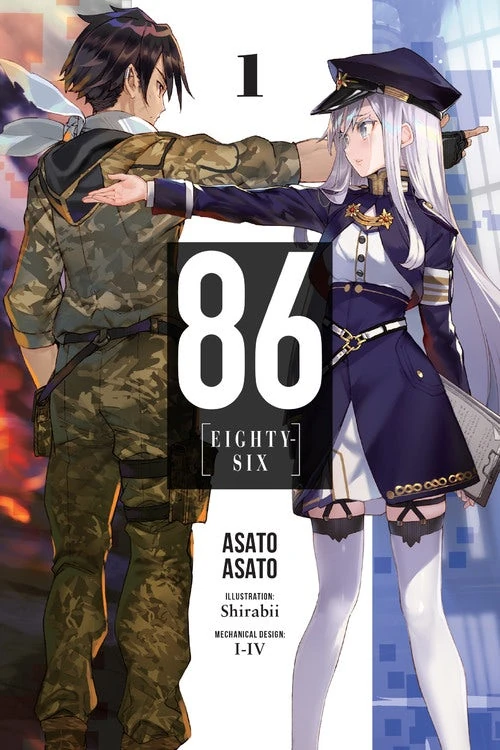
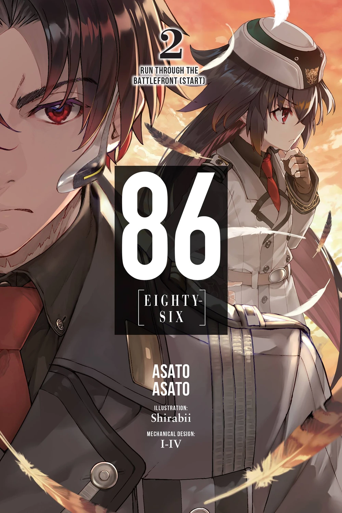
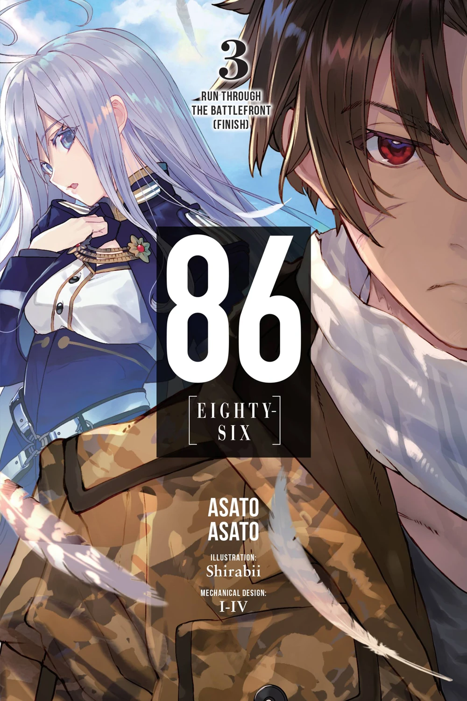
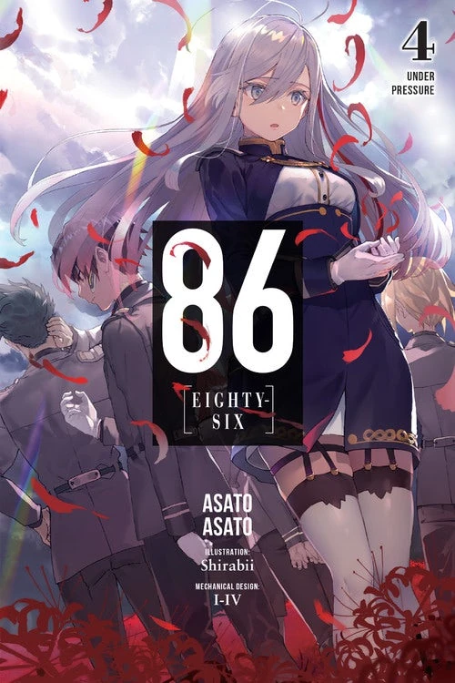
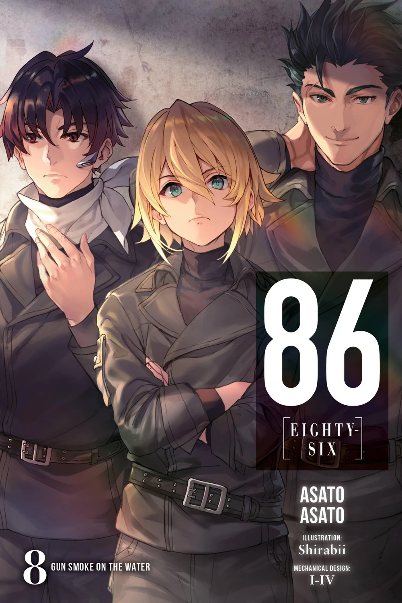
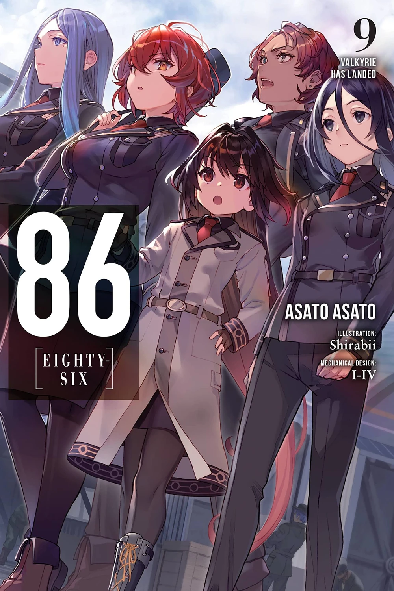
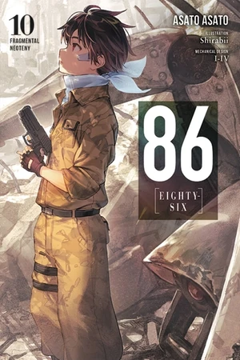
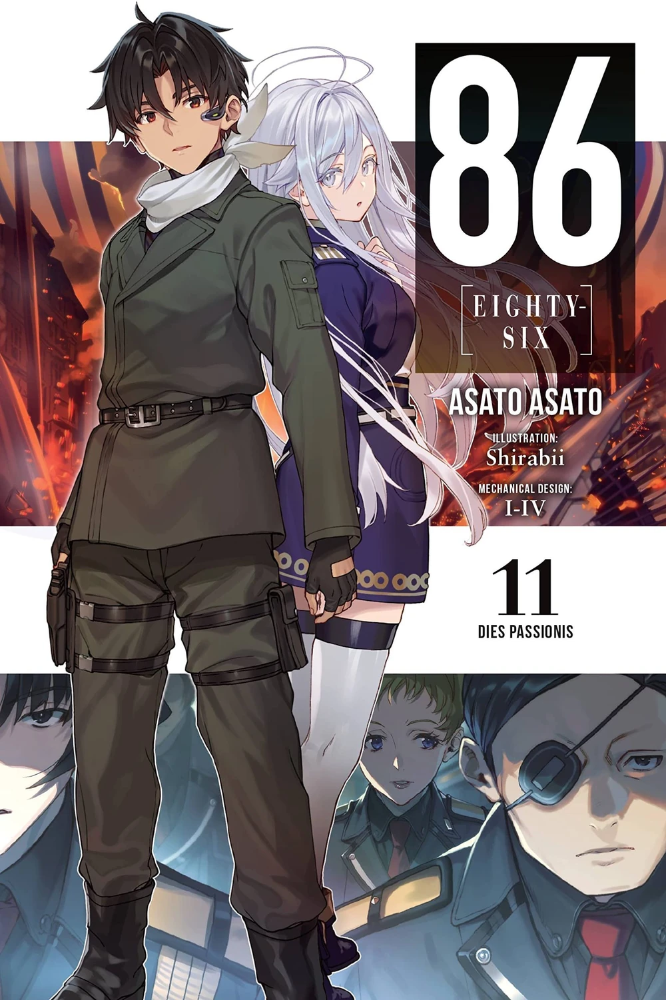

EIGHTY-SIX
"Eighty-Six" (エイティシックス Eiti-shikkusu?) is the first volume of the 86 -Eighty Six- light novel series written by Asato Asato and illustrated by Shirabii featuring mechanical designs by I-IV. The volume covers the first story arc of the series, depicting the struggles of two soldiers—Vladilena Milizé and Shinei Nouzen—as they fight the same war together, but chase towards goals of their own, all the while never even seeing each other's faces.
Run Through the Battlefront
"Run Through the Battlefront (Start)" (ラン・スルー・ザ・バトルフロント〈上〉 Ran Surū Za Batorufuronto (Jou)?) is the second volume of the 86 -Eighty Six- light novel series written by Asato Asato and illustrated by Shirabii featuring mechanical designs by I-IV. The volume covers the first-half of the second story arc of the series, depicting the life of the Spearhead Squadron after being saved by the Federal Republic of Giad as they find their purpose on the battlefields once again.
Run Through the Battlefront (Finish)
"Run Through the Battlefront (Finish)" (ラン・スルー・ザ・バトルフロント〈下〉 Ran Surū Za Batorufuronto (Ge)?) is the third volume of the 86 -Eighty Six- light novel series written by Asato Asato and illustrated by Shirabii featuring mechanical designs by I-IV. It covers the second-half of the second story arc of the series depicting the battle against the formidable Morpho, while Shinei Nouzen searches for the answer as to why he keeps standing on the battlefield, despite his reasons to fight already lost.
Under Pressure
"Under Pressure" (アンダー・プレッシャ Andā Puressha?) is the fourth volume of the 86 -Eighty Six- light novel series written by Asato Asato and illustrated by Shirabii featuring mechanical designs by I-IV. The volume covers the third story arc of the series depicting Vladilena Milizé joining the ranks of the Federacy's military, and the dangerous operation assigned to the newly formed Eighty-Sixth Strike Package to retake the former Republic city of Charité.
Death, Be Not Proud
"Death, Be Not Proud" (死よ、驕るなかれ Shiyo, Ogoru Nakare?) is the fifth volume of the 86 -Eighty Six- light novel series. The volume covers the first half of the fourth story arc of the series, depicting the Strike Package's new mission to support their allied nation—the United Kingdom of Roa Gracia—while introducing a new foil to the Eighty-Six and giving a new perspective to their pride.
Darkest Before the Dawn
"Darkest Before the Dawn" (明けねばこそ夜は永く Akeneba Koso Yoru wa Nagaku?) is the sixth volume of the 86 -Eighty Six- light novel series. The volume covers the second half of the fourth story arc of the series, depicting the United Kingdom's and the Strike Package's struggle to finally rid the Dragon Corpse Mountains of the Legion, while Shin and Lena struggle to understand the other.
Mist
"Mist" (ミスト Misuto?) is the seventh volume of the 86 -Eighty Six- light novel series. This volume covers the fifth story arc of the series, depicting the 1st Armored Group's rest and recuperation in the Alliance of Wald. Within the mist, things start to get steamy between Shin and Lena.The Merciless Queen, a high-ranking commander unit for the Legion, has finally been taken into custody.
Gun Smoke on the Water
"Gun Smoke on the Water" (ガンスモーク・オン・ザ・ウォーター Gansumōku On Za Wōtā?) is the eighth volume of the 86 -Eighty Six- light novel series. The volume covers the first half of the sixth story arc of the series, depicting the Strike Package's new mission to hunt down a Morpho nestled in the seas of the Regicide Fleet Countries. While the others seem to have their bearings straight and headed towards a better tomorrow, Theo struggles to find an answer for his future.
Valkyrie Has Landed
"Valkyrie Has Landed" (ヴァルキリィ・ハズ・ランデッド Varukirii Hazu Randeddo?) is the ninth volume of the 86 -Eighty Six- light novel series. The volume covers the second half of the sixth story arc of the series, depicting the continuation of the Strike Package's struggle to hunt down the Noctiluca while mourning their losses, fighting their demons of pride cursing them towards a never ending war. Most have gotten their goals correct as they fight to end the conflict. Kurena herself has promised to fight to the end, but what if said "end" was something she never wanted?
Fragmental Neoteny
"Fragmental Neoteny" (フラグメンタル・ネオテニー Furagumentaru Neotenī?) is the tenth volume of the 86 -Eighty Six- light novel series. The volume is a compilation of previously and newly written prequel stories detailing the rise of Shinei Nouzen. What makes a Reaper? What hardships must an innocent child endure to become the vaunted champion of the Eighty-Six? A peek into the past will shed light on his truth. The path he walks is paved with bonds forged in love and broken by tragedy—the shattered fragments of stories untold, committed to memory through the iron will of the one who would shoulder their legacy.
Dies Passionis
"Dies Passionis" (ディエス・パシオニス Diesu Pashionisu?) is the eleventh volume of the 86 -Eighty Six- light novel series. This volume covers the seventh story arc of the series, depicting the Legion's second offensive and its repercussions. The Strike Package is forced to return to the Republic for the final time and carry out a mission which would save their oppressors. It happened all too quickly. A flash, a rumble, and then… silence. In an instant, an unprecedented Legion assault wrought untold destruction upon nations across the world. As humanity’s borders are sent into swift decline, Shin and Lena are tasked with a large-scale rescue operation that brings them back to Republic soil after what seems like a lifetime.
Holy Blue Bullets
"Holy Blue Bullet" (ホーリィ・ブルー・ブレット Hōrii Burū Buretto?) is the twelfth volume of the 86 -Eighty Six- light novel series. This volume covers the eighth story arc of the series, depicting the aftermath of Operation Lorica Sacra and the Federacy's attempts to regain ground. The Eighty-Sixth Strike Package, although heavily affected by the previous operation, is dragged back into combat on the northern front. It was to be a fairly straight forward operation. At least, until a bunch of fools were tempted by a pie in the sky idea.